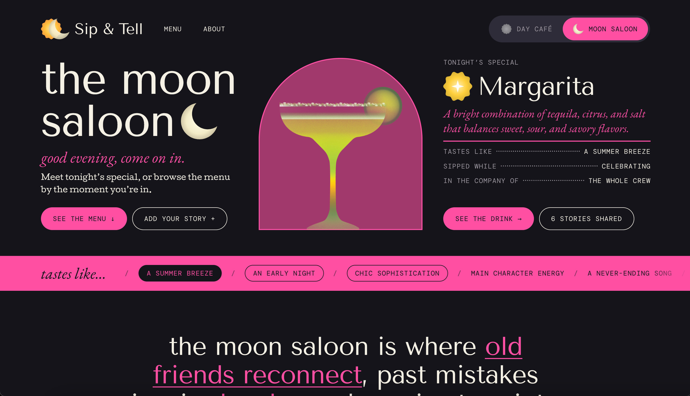
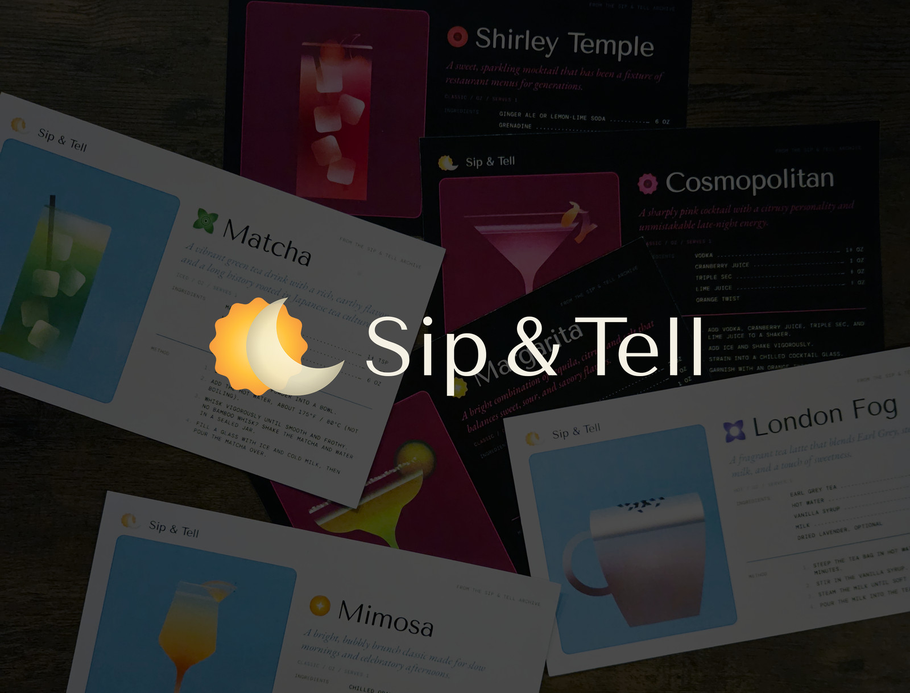

Sip & Tell
- UX Design
- Interaction Design
- Digital Illustration
Sip & Tell is a community archive of drinks and the moments people share them in. Visitors browse a menu organized by occasion rather than ingredient, read the stories others have attached to each drink, and add their own through a short questionnaire. Every drink comes with a recipe to make at home.
The site is divided into two spaces: The Day Café for coffee, tea, and brunch, and The Moon Saloon for cocktails and late nights. I designed it from the first sitemap through to code, including the brand, illustrations, user flow, and printed recipe cards.
Objective
I wanted to make a space that treats drinks the way people actually remember them: by who they were with and what the morning or night felt like, not only by what was in the glass. The archive needed to welcome all kinds of drinks without reading as just a bar or just a café, so I split it into two spaces whose identities could be distinct yet clearly connected.
My biggest source of inspiration was &friends, a site spotlighting amateur soccer teams in New York City, whose editorial use of type is unusual for the web. It pushed me past a conventional product aesthetic that had been diluting the community feel of the project. The goal became a site expressive enough to feel like a gathering place while staying easy to browse, read, and contribute to.

Approach
My first build gave each space its own palette and typefaces, but critique showed the two felt too separate. I rebuilt the brand on a shared foundation: the same ink and paper tones, one typographic system, and a single accent for each space, blue for the café and pink for the saloon. The eclipse logo carries the idea, overlapping the sun and moon in one mark. I redrew the illustrations in Illustrator as geometric forms with gradients and grain, and gave every drink its own icon.
With the system settled, I prototyped the full user flow in Figma, designing every screen a visitor could reach. The questionnaire asks the most of the user, so I worked through the edge cases and errors possible at each step. Once the site was in code, small hover animations on the logo and drink icons made exploring it feel like a field of Easter eggs.
Results
The finished site is live with six drinks across the two spaces. Visitors can browse by occasion, read and add stories, and switch each recipe between classic and zero-proof, ounces and milliliters, and different serving sizes. Submissions feed into a Google Sheet where I review and approve them, so the archive can keep growing while staying moderated. The recipe cards also exist in print, carrying the archive off the screen and into people's kitchens.
In the final critique, people responded most to the illustrations, the playful mood, and the flow of the questionnaire. They also found the graphic-forward landing page hard to enter without clearer direction, which sets up my next round of refinement: making the path from browsing to participating more obvious, starting with moving the story archive above the recipe so stories come first.
